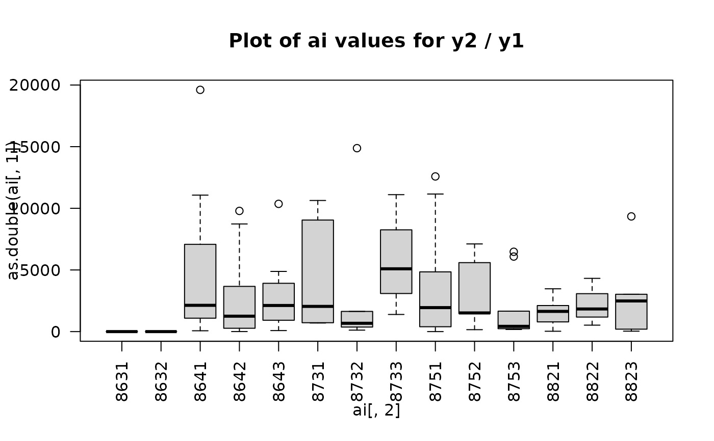

Calculation of sigma squared
CalcS2.RdCalculation of sigma squared using either residual or simple variance for level, difference or ratio statistics. The function includes options for averaging over several periods.
Arguments
- data
The dataset
- yVar
The variable name for the interest variable (y). Eg "turnover"
- xVar
The name of the activity variable which relates to the interest variable. Eg "numberOfEmployees"
- strataVar
The variable used for stratification
- sampleVar
The variable used to identify which companies were included in the sample. This is used in cases where the interest variable (y variable) are not available for the population. When a variable is specified here, y-values from the sample only are used to calculate s2. Default is NULL
- residVariance
Whether to calculate residual or other variance. Default is residual.
- baseVar
Variable which provides values as a fixed base for difference and ratio statistics. If this is missing, then a moving base is used as the previous period.
- estimateType
The type of statistic being calculated. Choose beteen "level" for a standard level statistic, "diff" for a difference statistic, or "ratio" = ratio statistic. If not provided, the function defaults to a level statistic.
- meanType
In the case of several periods of data, meanType specifies how they should be averaged. Default "var" calculated sigma sq and takes the average. "y" takes the average of the y values first and then calculates sigma sq.
- p
Specifies how much overlap there is between periods for a difference or ratio statistic. Default is p = 1 which indicates full overlap between periods.
- printPlot
Indicates whether or not to print boxplots of the residual values (ei or ai) to identify outliers. One plot is made for each period or each difference/ratio period. Default is FALSE.
Value
- s2
sigma squred values for each strata group
- N
number of observations used in the calculations.
- n
If a sample variable is specified, n is also returned
Examples
# Call test dataset
data(testData)
# Create stratification variable
testData$strata1 <- paste(testData$nace3, testData$storGrp, sep="")
# Resdiual variance for one period
CalcS2(data = testData, yVar = "y1", xVar = "antAnsatt", strataVar = "strata1",
estimateType = "level")
#> Warning: The following strata had an s2 that was unable to be calculated or was calculated as 0: 8631
#> The following strata had an s2 that was unable to be calculated or was calculated as 0: 8632
#> $s2
#> 8631 8632 8641 8642 8643 8731 8732
#> 0 0 492346768 404512719 468736662 1921389609 249215604
#> 8733 8751 8752 8753 8821 8822 8823
#> 324825752 1121455763 386863599 692729944 417504746 1360775404 226183872
#>
#> $N
#> 8631 8632 8641 8642 8643 8731 8732 8733 8751 8752 8753 8821 8822 8823
#> 1 1 12 16 10 5 6 4 11 9 10 7 3 5
#>
# Simple variance for one period
CalcS2(data = testData, yVar = "y1", xVar = "antAnsatt", strataVar = "strata1",
estimateType = "level", residVariance = FALSE)
#> Warning: The following strata had an s2 that was unable to be calculated or was calculated as 0: 8631
#> The following strata had an s2 that was unable to be calculated or was calculated as 0: 8632
#> $s2
#> 8631 8632 8641 8642 8643 8731 8732
#> 0 0 561660165 417298735 490910441 690015120 151375945
#> 8733 8751 8752 8753 8821 8822 8823
#> 213519846 620529087 318926563 717406349 311907686 1639948453 273038157
#>
#> $N
#> 8631 8632 8641 8642 8643 8731 8732 8733 8751 8752 8753 8821 8822 8823
#> 1 1 12 16 10 5 6 4 11 9 10 7 3 5
#>
# Residual variance for three periods
CalcS2(data = testData, yVar = c("y1", "y2", "y3"), xVar = "antAnsatt", strataVar = "strata1",
estimateType = "level")
#> Warning: The following strata had an s2 that was unable to be calculated or was calculated as 0: 8631
#> The following strata had an s2 that was unable to be calculated or was calculated as 0: 8632
#> $s2
#> 8631 8632 8641 8642 8643 8731 8732
#> 0 0 492435964 404149143 468570684 1926515368 250209925
#> 8733 8751 8752 8753 8821 8822 8823
#> 324383053 1121860425 386909528 691670574 419083769 1362964715 226425434
#>
#> $N
#> 8631 8632 8641 8642 8643 8731 8732 8733 8751 8752 8753 8821 8822 8823
#> 1 1 12 16 10 5 6 4 11 9 10 7 3 5
#>
# Include a sample variable
CalcS2(data = testData, yVar = "y1", xVar = "antAnsatt", strataVar = "strata1",
sampleVar = "utv1", estimateType = "level")
#> Warning: The following strata had an s2 that was unable to be calculated or was calculated as 0: 8631
#> The following strata had an s2 that was unable to be calculated or was calculated as 0: 8632
#> The following strata had an s2 that was unable to be calculated or was calculated as 0: 8731
#> The following strata had an s2 that was unable to be calculated or was calculated as 0: 8733
#> The following strata had an s2 that was unable to be calculated or was calculated as 0: 8822
#> $s2
#> 8631 8632 8641 8642 8643 8731 8732 8733
#> 0 0 525337551 716445670 56980689 0 417413327 0
#> 8751 8752 8753 8821 8822 8823
#> 394219747 84776358 935850144 668329969 0 246960924
#>
#> $N
#> 8631 8632 8641 8642 8643 8731 8732 8733 8751 8752 8753 8821 8822 8823
#> 1 1 12 16 10 5 6 4 11 9 10 7 3 5
#>
#> $n
#> 8631 8632 8641 8642 8643 8731 8732 8733 8751 8752 8753 8821 8822 8823
#> 0 0 3 3 4 0 4 0 4 3 3 4 0 2
#>
# Difference example - fixed base
CalcS2(data = testData, yVar = c("y1", "y2", "y3"), xVar = "storGrp", strataVar = "strata1",
residVariance = TRUE, baseVar = "y1", estimateType = "diff")
#> Warning: The following strata had an s2 that was unable to be calculated or was calculated as 0: 8631
#> The following strata had an s2 that was unable to be calculated or was calculated as 0: 8632
#> $s2
#> 8631 8632 8641 8642 8643 8731 8732 8733
#> 0 0 26462914 100115476 37001939 27401585 74699134 148460252
#> 8751 8752 8753 8821 8822 8823
#> 81995071 77418240 43186923 14280010 175348271 146028180
#>
#> $N
#> 8631 8632 8641 8642 8643 8731 8732 8733 8751 8752 8753 8821 8822 8823
#> 1 1 12 16 10 5 6 4 11 9 10 7 3 5
#>
# Difference example - changing base (just leave out baseVar)
CalcS2(data = testData, yVar = c("y1", "y2", "y3"), xVar = "storGrp", strataVar = "strata1",
residVariance = TRUE, estimateType = "diff")
#> Warning: The diff method was chosen but no base variable was specifyied. The previous period will be used as a moving base
#> Warning: The following strata had an s2 that was unable to be calculated or was calculated as 0: 8631
#> The following strata had an s2 that was unable to be calculated or was calculated as 0: 8632
#> $s2
#> 8631 8632 8641 8642 8643 8731 8732 8733
#> 0 0 19043162 18236366 20333359 10585380 10751089 33663412
#> 8751 8752 8753 8821 8822 8823
#> 25839252 24938222 12223588 13270894 20983273 30379507
#>
#> $N
#> 8631 8632 8641 8642 8643 8731 8732 8733 8751 8752 8753 8821 8822 8823
#> 1 1 12 16 10 5 6 4 11 9 10 7 3 5
#>
#Ratio example showing boxplots - fixed base
CalcS2(data = testData, yVar = c("y1", "y2","y3"), xVar = "antAnsatt", strataVar = "strata1",
baseVar="y1", estimateType = "ratio", printPlot = TRUE)

#> Warning: The following strata had an s2 that was unable to be calculated or was calculated as 0: 8631
#> The following strata had an s2 that was unable to be calculated or was calculated as 0: 8632
#> $s2
#> 8631 8632 8641 8642 8643 8731 8732 8733
#> 0 0 134293148 136751878 41055492 301025429 332737628 125720901
#> 8751 8752 8753 8821 8822 8823
#> 81962762 114068562 68813149 157030406 78778367 84064841
#>
#> $N
#> 8631 8632 8641 8642 8643 8731 8732 8733 8751 8752 8753 8821 8822 8823
#> 1 1 12 16 10 5 6 4 11 9 10 7 3 5
#>